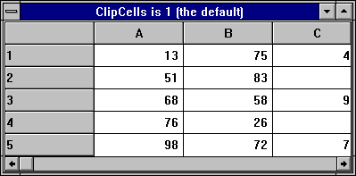
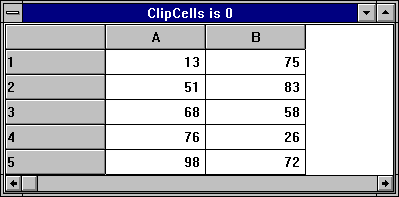

| Applies To: | Grid |
Description
This property determines whether or not the Grid displays partial cells. The default is 1. If you set ClipCells to 0, the Grid displays only complete cells and automatically fills the space between the last visible cell and the edge of the Grid with the GridBCol colour.
The first picture below shows a default Grid (ClipCells is 1) in which the third column of data is in fact incomplete (clipped), although this is by no means apparent to the user. The second picture shows the effect on the Grid of setting ClipCells to 0 which prevents such potential confusion.

